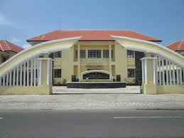
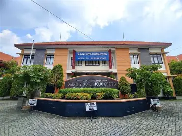

Jl.Pulorejo Desa Pulorejo, Kecamatan Prajurit Kulon, Kota Mojokerto
| HOME |
|---|
| JURUSAN |
| DATA SISWA |
| DATA GURU |
| EKSTRAKURIKULER |
SMK NEGERI 2 MOJOKERTO
- Visi
- Misi

SMK Negeri 2 Mojokerto, menghasilkan Sumber Daya Manusia (SDM) yang berkarakter, kompeten dan siap kerja serta mampu berwirausaha di era globalisasi.

Mengembangkan sistem pendidikan yang berorientasi pada mutu berakar norma budaya bangsa Indonesia. Meningkatkan layanan prima, bersinergi dengan masyarakat Dunia Usaha/Industri sebagai bentuk pemenuhan tenaga kerja secara profesional, Mewujudkan tamatan yang cerdas, kompeten, mempunyai etos kerja dan siap bersaing di era globalisasi.